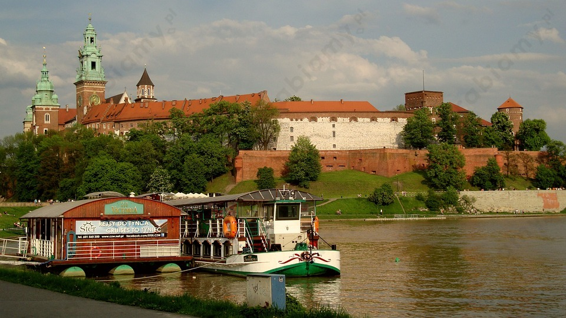
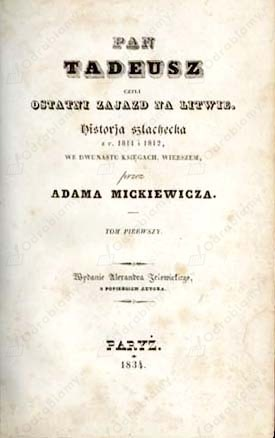
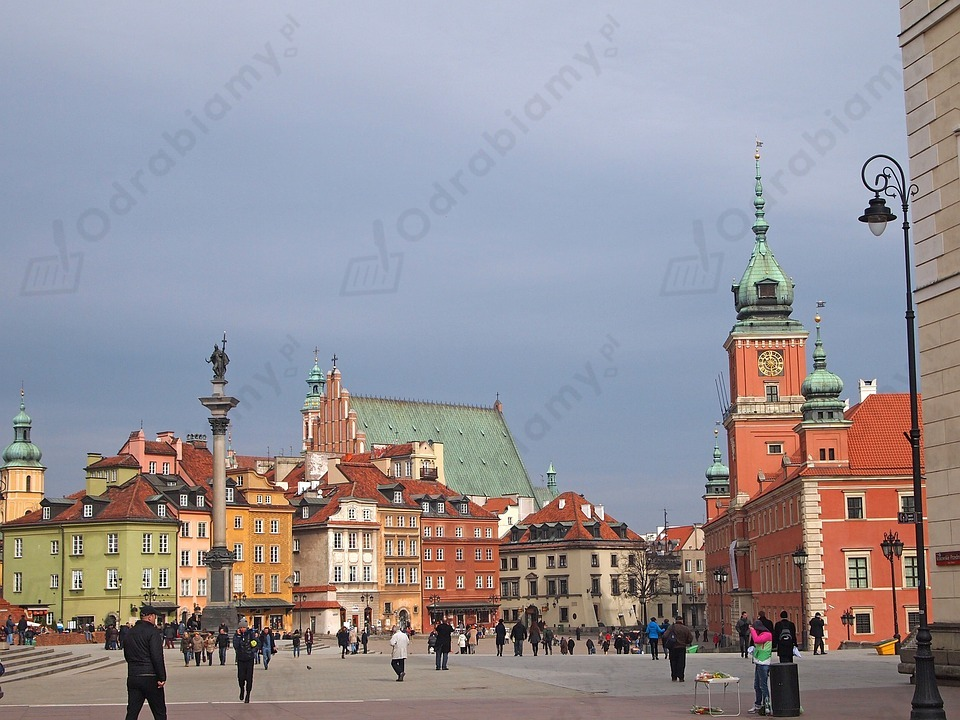
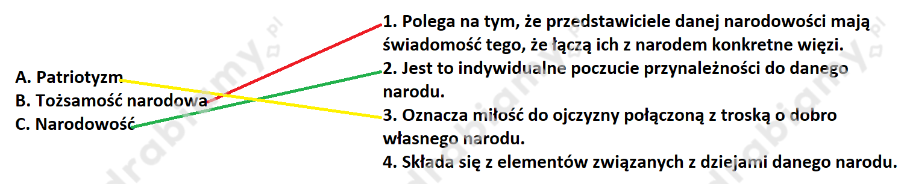

Rozwiązanie 1.:
Zdania prawdziwe:
B. Ojczyzna to dla danej osoby kraj urodzenia lub zamieszkania albo państwo, z którego pochodzą jej przodkowie.
D. Wszystkie osoby należące do Polonii są imigrantami.
Rozwiązanie 2.:
| Zdania prawdziwe |
| [B] Ojczyzna to dla danej osoby kraj urodzenia lub zamieszkania albo państwo, z którego pochodzą jej przodkowie. |
| [D] Wszystkie osoby należące do Polonii są imigrantami. |
Rozwiązanie 1.:
Przykładowe rozwiązanie
Współcześnie obserwujemy kryzys rodziny, który polega na tym, że coraz częściej dochodzi do rozbicia dużej ilości rodzin. Coraz częściej rodziny budują swoje fundamenty nie na wartościach, ale na karierze. Prowadzi to do zaniku tradycyjnych funkcji rodziny (np. wychowawczych, prokreacyjnych, kulturowych). Dochodzi do rozluźnienia więzi między rodzicami i ich potomstwem. Rodziny dążąc do zaspokojenia coraz bardziej wymagających potrzeb ekonomicznych, zatracają wartości, na których zostały zbudowane. Kryzys rodzin spowodowany jest również po części kryzysem ekonomicznym oraz moralnym.
Współczesna polska rodzina odbiega od tradycyjnego modelu rodziny. Zmienił się sposób myślenia o roli rodziny w społeczeństwie oraz charakter i rola jej poszczególnych członków. Współczesny wzorzec polskiej rodziny jest spójny ze wzorcem rodziny zachodnioeuropejskiej. Obecnie panuje powszechne przekonanie, że związek małżeński powinien opierać się na partnerstwie, zaś kobieta i mężczyzna wspólnie mają podejmować decyzje w poszczególnych sprawach. Coraz częściej dochodzi do tego, że rodzice mają tylko jedno lub dwoje dzieci, ponieważ proces wychowywania jest męczący i absorbujący dla nich, więc istnieje pogląd, że lepiej wychowywać małą liczbę potomstwa. Coraz częściej Polacy odchodzą od tradycyjnych wartości rodzinnych na rzecz zdobycia dobrego wykształcenia oraz rozwój zawodowy. Współcześnie coraz częściej członkowie rodziny odwracają się od siebie i nie stanowią dla siebie oparcia. Według danych statystycznych rośnie liczba rozwodów w Polsce, a tym samym odsetek rozpadających się rodzin. W 1950 r. w Polsce miało miejsce 11 tysięcy rozwodów, zaś w 2015 r. ponad 67 tysięcy razy sąd orzekł rozpad małżeństwa. Ponadto w ostatnich latach jest bardzo niska liczba urodzeń, co wskazuje, że małżeństwa oddają się pracy zawodowej lub wzmożonej edukacji niż rodzeniu i wychowywaniu dzieci.
Wniosek: Odchodzenie od tradycyjnych wzorców życia sprzyja rozpadowi rodziny.
Przykładowe problemy współczesnej rodziny to:
Rozwiązanie 2.:
Zadanie ma charakter indywidualny, ponieważ wymaga wyrażenia własnego stanowiska. Dlatego proponowane rozwiązanie może stanowić wyłącznie postać przykładowej wskazówki pomocnej do samodzielnego opracowania odpowiedzi.
Przykładowa odpowiedź:
Można wyróżnić wiele kwestii, które uznaje się za problemy współczesnych rodzin. Przykładowo, można wśród nich wskazać: bezrobocie, trudne położenie ekonomiczne, przemoc w rodzinie, alkoholizm, narkomanię, pracoholizm rodziców, złe zachowanie dzieci, odczuwanie samotności przez członków rodziny czy nadmiar traumatycznych wydarzeń występujących w rodzinie (na przykład przedwczesna śmierć członka rodziny bądź ciężka choroba kogoś z rodziny). Wszystkie tego typu kwestie utrudniają funkcjonowanie rodziny i nierzadko uniemożliwiają osiągnięcie tego, co nazywamy szczęściem rodzinnym.
Jeśli jednak należy wskazać dwa najważniejsze problemy współczesnych rodzin, to można w tym celu wytypować bezrobocie oraz trudne położenie ekonomiczne. To drugie często wynika z pierwszego, ale niekoniecznie, ponieważ współcześnie jesteśmy świadkami bardzo dużych dysproporcji dochodowych między ludźmi w obrębie tego samego społeczeństwa. W niektórych branżach zarobki są bardzo niskie, tak iż nie pozwalają na godne przeżycie, a tym bardziej utrzymanie rodziny, podczas gdy w innych zarabia się dużo. Dlatego czasami z trudnym położeniem ekonomicznym borykają się również te jednostki, które mają pracę. Niemniej jednak trwały brak zatrudnienia, tj. bezrobocie, może rodzić u jednostki w jeszcze większym stopniu obniżenie poczucia własnej wartości, frustrację, nerwicę, a nawet depresję.
Bezrobocie i trudne położenie ekonomiczne można uznać za główne problemy współczesnych rodzin, ponieważ inne trudności, jak na przykład przemoc w rodzinie, ostre kłótnie, alkoholizm, narkomania czy brak możliwości zapewnienia dzieciom dobrych warunków do nauki, okazują się negatywnymi następstwami braku odpowiednich środków finansowych, a te z kolei są pokłosiem bezrobocia i trudnego położenia ekonomicznego.
Rozwiązanie 1.:
Elementy związane z przynależnością do narodu:
A. wspólne pochodzenie i historia
B. mówienie tym samym językiem
Rozwiązanie 2.:
| Elementy związane z przynależnością do narodu |
| [A] wspólne pochodzenie i historia |
| [B] mówienie tym samym językiem |
| [E] miłość i szacunek do ojczyzny |
-> Wedle najbardziej rozpowszechnionej definicji naród to zbiorowość, na którą składają się ludzie, którzy połączeni są wspólnymi pochodzeniem, tradycją oraz kulturą. Członkowie narodu często mówią też tym samym językiem i zamieszkują na terenie jednego państwa, ale posiadanie własnej państwowości nie jest koniecznym elementem do istnienia narodu. Wiadomo bowiem, że istnieją narody bez własnego państwa. Przykładowo, Polska przez 123 lata zaborów nie miała własnej państwowości, a mimo to trwał wówczas naród polski.
Rozwiązanie 1.:
Elementy dziedzictwa narodowego Polaków:
Rozwiązanie 2.:
Przykładowe trzy elementy należące do dziedzictwa narodowego Polaków:



Rozwiązanie 1.:
Państwo realizuje funkcję porządkową poprzez:
Rozwiązanie 2.:
Funkcja porządkowa państwa wiąże się z wymuszaniem na obywatelach przestrzegania obowiązującego prawa oraz z dbaniem o ład i bezpieczeństwo. Państwo realizuje funkcję porządkową między innymi poprzez prowadzenie i utrzymywanie instytucji prokuratury, która zajmuje się wykrywaniem i ściganiem przestępstw, a także poprzez utrzymywanie policji, która ma przeciwdziałać czynom niezgodnym z prawem.
Rozwiązanie 1.:
Gdyby organy państwa nie realizowały funkcji zewnętrznych, to doszłoby to zamknięcia się danego kraju na kontakty zewnętrzne. Tego rodzaju zachowanie byłoby bardzo niebezpieczne, ponieważ państwo straciłoby sojuszników, którzy mogliby je wesprzeć w przypadku zaatakowania go przez nieprzyjaciela. Ponadto brak kontaktów z innymi państwami doprowadziłby do ograniczenia kontaktów handlowych, zmniejszenia popytu na towary krajowe, zmniejszenia asortymentu w odizolowanym państwie oraz stagnacji gospodarczej. Jeśli państwo nie wypełniałoby poprawnie swoich funkcji zewnętrznych, to i jego obywatele mieliby utrudniony dostęp do wchodzenia ze swoimi produktami na rynki międzynarodowe, ze swobodnym przekraczaniem granicy państwowej. Słabość państwa w zakresie realizacji przez nie funkcji zewnętrznej, polegającej na obronie granic, wpływa na jego osłabienie militarne i słabość w zakresie zapewnienia bezpieczeństwa terytorium państwa.
Rozwiązanie 2.:
Zadanie ma charakter indywidualny, bo wymaga wyrażenia własnej oceny. Stąd proponowane rozwiązanie może stanowić wyłącznie postać przykładowej wskazówki pomocnej do samodzielnego sformułowania odpowiedzi.
Przykładowa odpowiedź:
Funkcje zewnętrzne państwa polegają na prowadzeniu przez państwo polityki międzynardowej (dyplomacji) i bronieniu granic (integralności terytorialnej). Gdyby państwo nie realizowało funkcji zewnętrznych, to jego obywatele byliby narażeni na stanie się ofiarami ataków ze strony obcych agresorów. Bez skutecznej dyplomacji oraz armii państwo mogłoby zostać zaatakowane przez wroga, a ten mógłby wyrządzać szkody również ludności cywilnej i gospodarce. Należyte realizowanie przez państwo funkcji zewnętrznych jest więc jednym z warunków niezbędnych do tego, by obywatele państwa mogli żyć bezpiecznie i odpowiednio się rozwijać.
Rozwiązanie 1.:
Ustrój demokratyczny daje obywatelom następujące korzyści:
Rozwiązanie 2.:
Ustrój demokratyczny obowiązuje współcześnie w większości rozwiniętych państw świata. Demokracja jest ustrojem, w którym obywatele sprawują władzę bezpośrednio lub za pośrednictwem wybranych przez siebie przedstawicieli, lecz każdorazowo mają udział w sprawowaniu rządów. Stąd demokrację określa się w skrócie jako rządy ludu (ludowładztwo).
Zaletą ustroju demokratycznego jest to, że obywatele mogą decydować o sprawach własnego państwa. Demokracja wiąże się też z licznymi swobodami obywatelskimi, w tym z wolnością słowa. Obywatele w ustroju demokratycznym mogą więc swobodnie wyrażać swoje poglądy i na wiele sposobów wpływać na rządzących (między innymi poprzez udział w procedurze wyborczej czy poprzez ewentualne krytykowanie wybranych poczynań rządzących). W demokracji legalnie może działać opozycja, a dodatkowo współczesne demokracje chronią też istotne interesy mniejszości. W ustroju demokratycznym chronione są podstawowe prawa człowieka, a wszystkich obywateli uważa się za równych wobec prawa. Poszanowanie wolności człowieka sprawia, że funkcjonować mogą niezależne media, a obywatele mogą cieszyć się daleko posuniętą swobodą w zakresie działalności gospodarczej.
Rozwiązanie 1.:
Preambuła Konstytucji RP odwołuje się do następujących wartości:
Rozwiązanie 2.:
| Wartości, do których odwołuje się preambuła Konstytucji RP: |
|
| -> Preambuła to wstęp do aktu prawnego, zazwyczaj mającego istotne znaczenie polityczne, który opisuje okoliczności jego powstania i główne cele, jakie przyświecały jego twórcom. |
Rozwiązanie 1.:
Struktura samorządu w Polsce wygląda następująco:
W poniższej tabeli przedstawiono organy poszczególnych samorządów:
|
Jednostka samorządu terytorialnego |
Organ stanowiący |
Organ wykonawczy |
|
Gmina |
rada gminy |
wójt, burmistrz, prezydent |
|
Powiat |
rada powiatu |
zarząd powiatu |
|
Województwo |
sejmik województwa |
zarząd województwa |
Rozwiązanie 2.:
Poniższa tabela przedstawia strukturę samorządu terytorialnego w Polsce:
| Jednostka samorządu | Organ stanowiący | Organ wykonawczy |
| Gmina | Rada gminy | Wójt, burmistrz, prezydent miasta |
| Powiat ziemski | Rada powiatu | Zarząd powiatu (ze starostą) |
| Miasto na prawach powiatu | Rada miasta | Prezydent miasta |
| Województwo | Sejmik województwa | Zarząd województwa (z marszałkiem województwa) |
Rozwiązanie 1.:
Teoria trójpodziału władz stworzona przez francuskiego prawnika Monteskiusza, jest aktualna do dnia dzisiejszego, ponieważ stanowi najsprawiedliwszy model funkcjonowania państwa. Teoria trójpodziału władz jest przeciwwagą wobec tyranii i rządów absolutnych, tak mocno krytykowanych przez Monteskiusza. Według oświeceniowego myśliciela w każdym państwie powinna funkcjonować władza ustawodawcza (parlament), wykonawcza (monarcha) oraz sądownicza (sprawowana przez niezależne sądy). Monteskiuszowska koncepcja trójpodziału władz zyskała uznanie już w XVIII wieku. Została wyrażona w Deklaracji Praw Człowieka i Obywatela, konstytucji Stanów Zjednoczonych, Konstytucji 3 maja oraz pierwszej konstytucji francuskiej. Obecnie jest to najbardziej rozpowszechniony system sprawowania władzy na świecie.
Trójpodział władzy w Polsce polega na jej podziale na:
Rozwiązanie 2.:
Zasada trójpodziału władzy jest jedną z fundamentalnych zasad typowych dla współczesnych demokracji, którą zawarto również w Konstytucji RP. Wedle tej zasady władza nie jest skupiona w jednym ośrodku, lecz jest rozdzielona pomiędzy organy władzy ustawodawczej, wykonawczej i sądowniczej. Zgodnie z regułą trójpodziału władzy, inny ośrodek stanowi prawo, inny odpowiada za jego wykonywanie, a jeszcze inny rozstrzyga o tym, czy prawo jest przestrzegane i czy podejmowane przez obywateli (w tym przez rządzących) działania są legalne.
Zgodnie z zasadą trójpodziału władzy organami władzy ustawodawczej są w Polsce sejm i senat (parlament), władzę wykonawczą sprawują prezydent i odpowiedzialna przed parlamentem Rada Ministrów (rząd), zaś władza sądownicza należy do niezależnych sądów i trybunałów.
Rozwiązanie 1.:
Rozwiązanie zadania:{premium
Rozwiązanie 2.:
| Pojęcie | Właściwe wyjaśnienie pojęcia |
| (A) Patriotyzm | (3) Oznacza miłość do ojczyzny połączoną z troską o dobro własnego narodu. |
| (B) Tożsamość narodowa | (1) Polega na tym, że przedstawiciele danej narodowości mają świadomość tego, że łączą ich z narodem konkretne więzi. |
| (C) Narodowość | (2) Jest to indywidualne poczucie przynależności do danego narodu. |
-> (4) Składa się z elementów związanych z dziejami danego narodu.